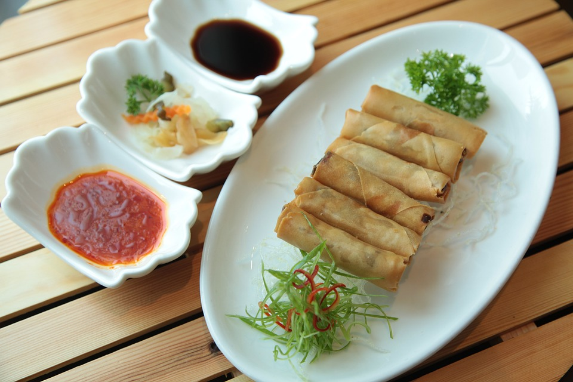

春卷

8.3
综合评分
632
人做过这道菜
方法
预热烤箱至200°C（400°F）。
在大锅中，用植物油炒香蒜末和洋葱末，直到它们变得柔软。
加入切碎的卷心菜、胡萝卜和豆芽，煮至蔬菜变软并且水分蒸发。
用酱油、盐和胡椒调味蔬菜混合物，然后让它冷却。
将一勺冷却的蔬菜混合物放在每个春卷皮的边缘，然后折叠两侧并紧紧卷起。
在预热的烤箱中烤约20分钟，或者直到变成金黄色。
配上酱油或者甜酸酱热吃。
享受！
原料
1
汤匙植物油，另外一些用于刷春卷
2
瓣大蒜，切碎
，切碎或压碎
1
个小洋葱，切碎
2
杯切碎的卷心菜
1
杯切碎的胡萝卜
1
杯豆芽
2
汤匙酱油
12
张春卷皮
小知识
春卷的制作方法和食材因地域而异，形成了各具特色的地方风味。例如，福建地区的春卷，外皮薄而酥，内馅以海鲜为主，口感鲜美。而广东地区的春卷，内馅则更偏重于蔬菜和瘦肉，口感清爽。
该菜谱发布于 2024-05-05 10:57:17
版权归作者所有，没有作者本人的书面许可任何人不得转载或使用整体或任何部分的内容。